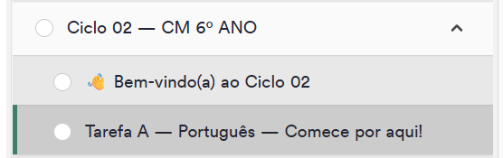
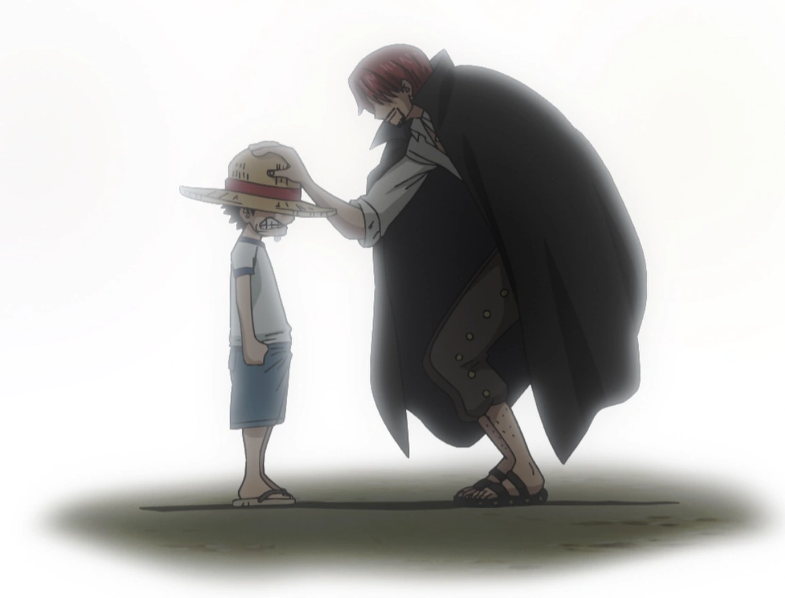
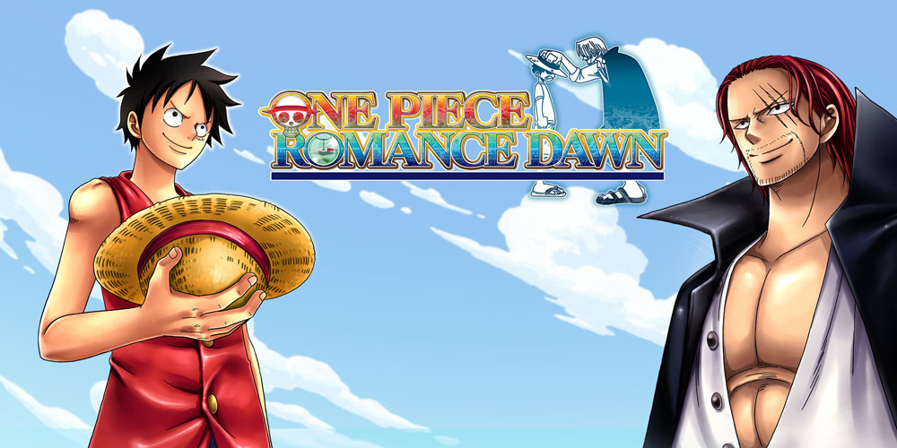
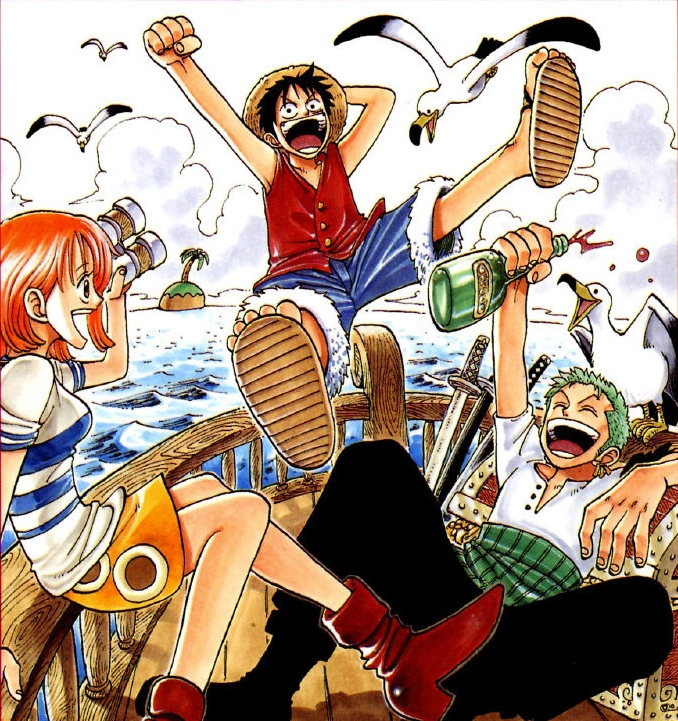

Missão Inicial: O Despertar do Capitão Fabiano rumo ao Colégio Militar
Vamos lá, Capitão Fabiano! O mar do East Blue está à nossa frente e o navio está pronto para zarpar rumo ao One Piece: a aprovação no Colégio Militar em 2028! Esta Tarefa A é o seu marco zero. Prepare o seu espírito, porque a jornada exige coragem, estratégia e muita leitura atenta. Abaixo estão as etapas que compõem este primeiro grande desafio.
🧭 Bússola do Estratégia Militar:

Assunto: 1.1 — Introdução ao Curso de Português para o Colégio Militar.
Instrução do Almirante Carlão: Abra a plataforma do Estratégia usando o botão abaixo, localize a Tarefa A do Ciclo 2 e encare esse desafio com toda a garra!
📜 Os Capítulos da Jornada (Tarefa A) - 01/01/2026

Capítulo 1Eu Sou Fabiano! O Homem que Vai Ser O Rei dos Piratas!
Base da História: Um bando pirata liderado por Alvida invade um navio e encontra um barril. De dentro dele, surge Fabiano, um garoto em busca do One Piece. Ele vira amigo de Koby, um garoto que almeja ser um marinheiro... Fabiano derrota Alvida e os dois embarcam rumo ao topo!
Missão de Estudo: Assim como Fabiano saiu de dentro do barril decidido a conquistar os mares, você está quebrando a barreira da zona de conforto para dominar a Língua Portuguesa. Preste atenção nos alicerces do texto e na introdução gramatical do curso!

Capítulo 2O Grande Espadachim Aparece! O Caçador de Piratas, Roronoa Zoro
Base da História: Fabiano e Koby chegam à Ilha das Conchas, uma das bases da Marinha. Eles encontram o caçador de piratas Roronoa Zoro, mantido prisioneiro pelo infame Capitão Morgan e seu filho Helmeppo.
Missão de Estudo: Na preparação para o Colégio Militar, você também encontrará conceitos difíceis no início. Mantenha o foco cirúrgico como um espadachim e desvende os segredos propostos pelo Estratégia!

Capítulo 3Morgan vs. Fabiano! Quem É Aquela Linda Misteriosa?
Base da História: Fabiano convence Zoro a juntar-se ao seu bando, mas para isso precisam derrotar o Capitão Morgan. Após livrarem a ilha da tirania do marinheiro, Koby é recrutado pela Marinha enquanto os outros dois continuam sua jornada.
Missão de Estudo: Vitória épica! Ao concluir os exercícios desta primeira tarefa, você derrota o "Capitão Morgan" da sua rotina de estudos. Prepare a bússola para a próxima ilha!
🏁 Terminou a Missão de Hoje?
Capitão Fabiano, assim que concluir todas as etapas e exercícios da Tarefa A, clique no botão abaixo para avisar o Almirante Carlão!
✉️ Tarefa Completada? Avisar o Almirante Papai Carlão!